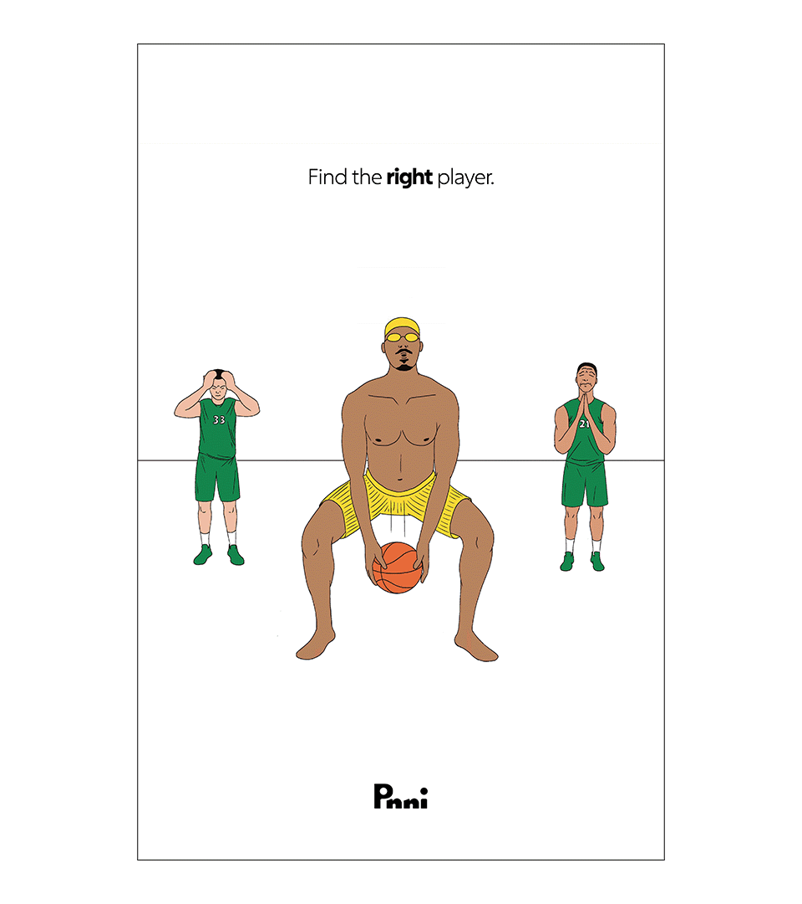
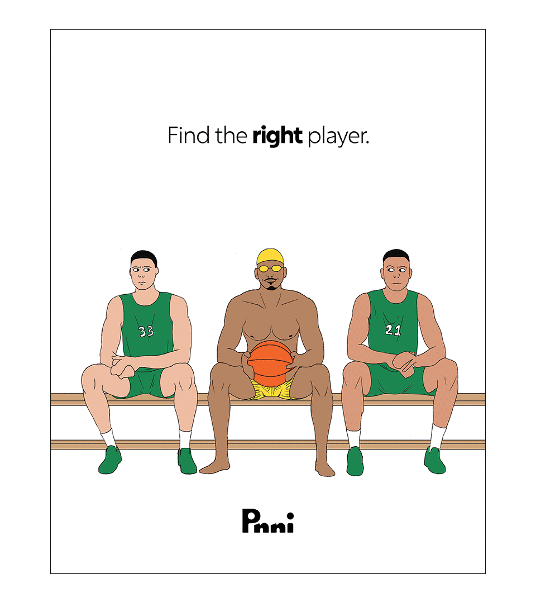
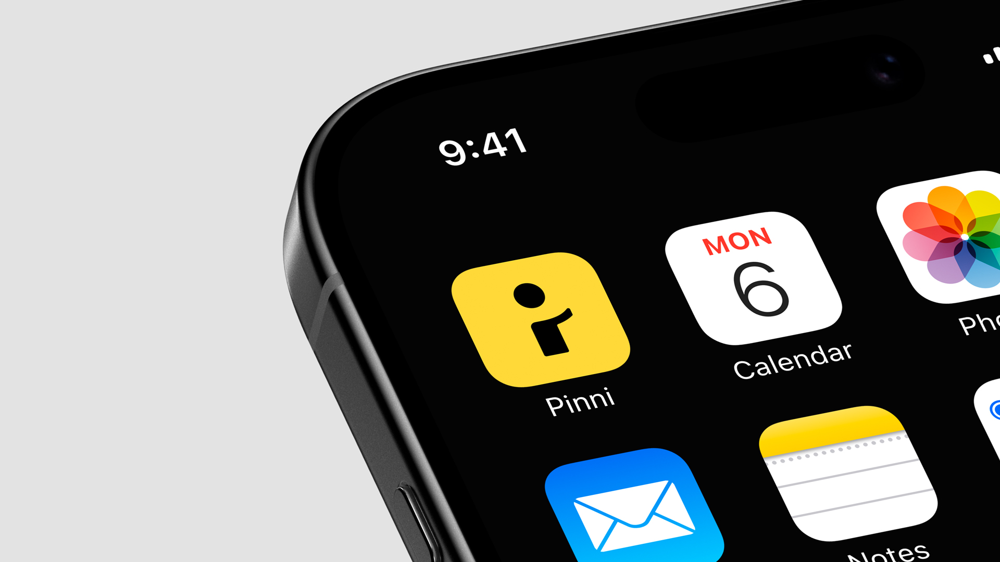
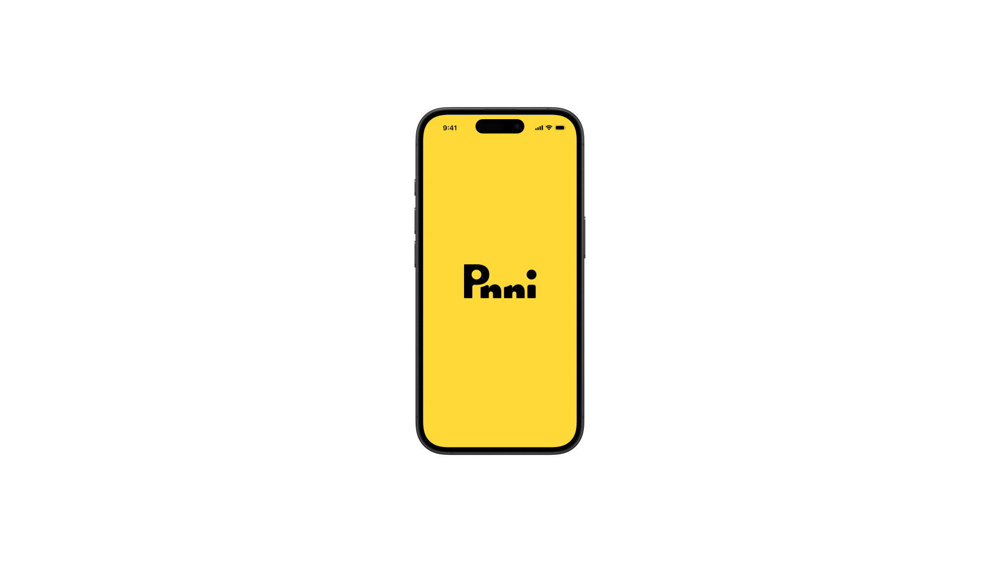
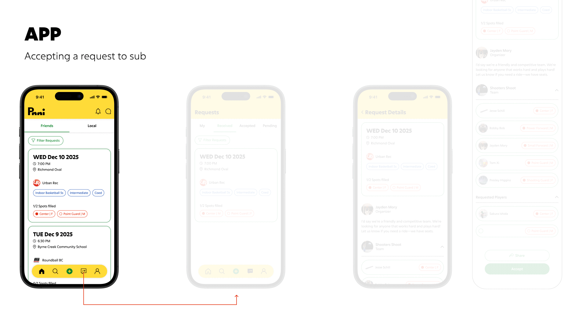
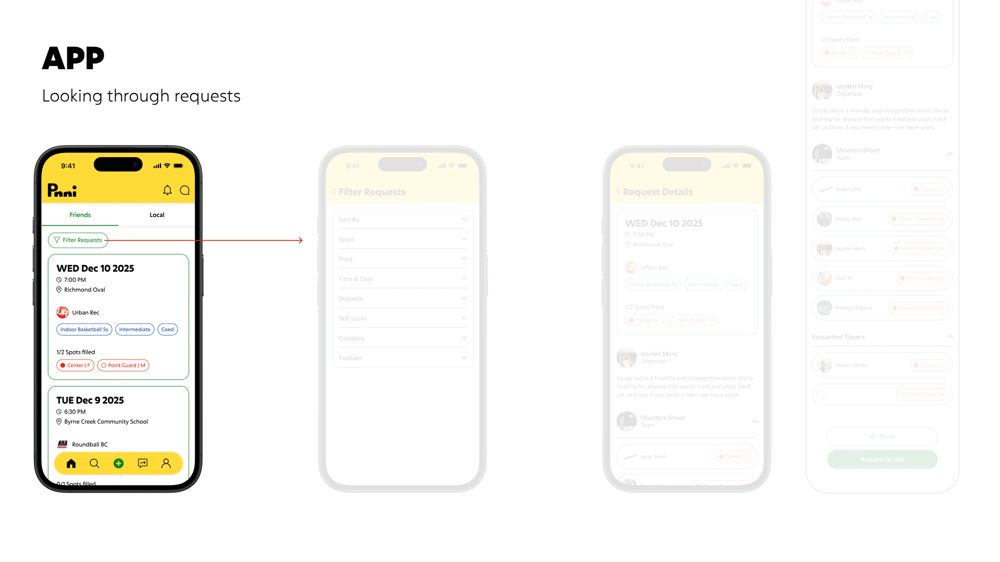
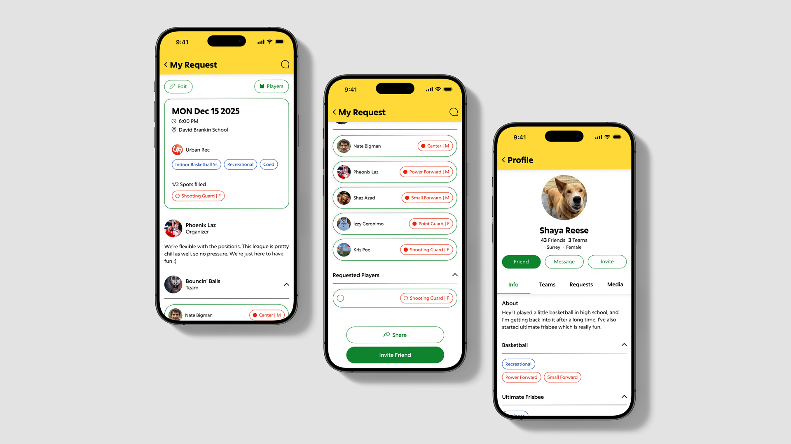

Pinni
Branding / App / Campaign
Pinni is an app that helps adults in North America find substitute players for their recreational sports teams. The goal of the brand is to help people overcome any hesitation they might have playing with strangers, and to help foster connections while having fun.
The name "Pinni" originates from the word "pinny," another term for a training jersey/scrimmage vest in team sports. This word was chosen because wearing a pinny means to be a part of a team, and it ties in to the recreational level the audience plays in.
The final logo was created to have the silhouette of person waving in the negative space between the "P" and the first "i," illustrating Pinni's welcoming stance.




These concept sketches are an example of a potential comedic campaign, that illustrates what it would be like playing with the wrong substitute player in a light-hearted and ridiculous tone.

The OOUX (Object Oriented UX) method was used to define relationships between objects and to create user and product flows. The scope of this project only covers 3 user flows: creating, accepting and looking through requests for players to sub.



